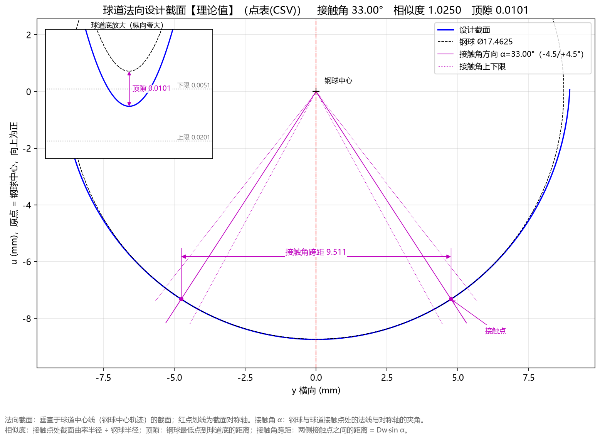
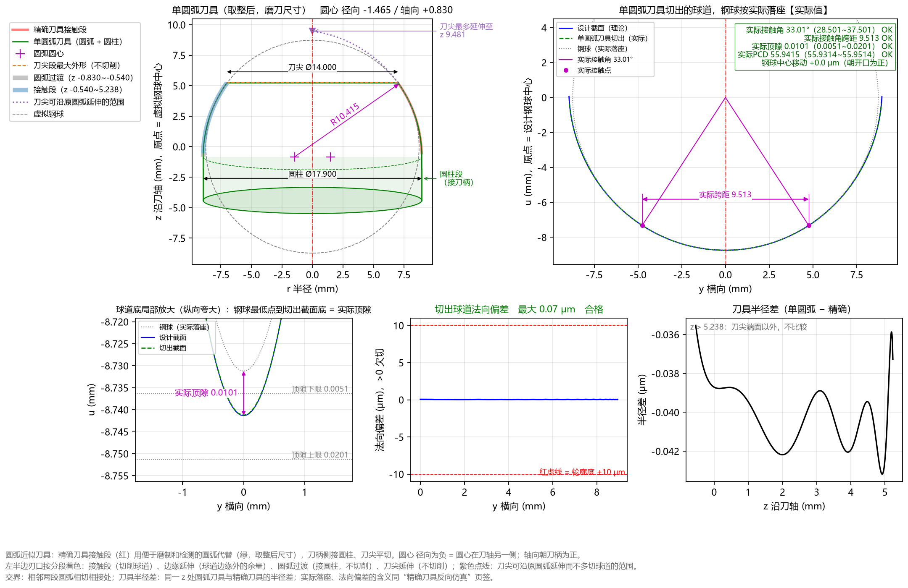

8.2 案例二：导入客户点表 CSV 逆向设计刀具与 Table 1/2 对标 (Nexteer 34205673)
一、任务背景与客户图纸特征
在实际外贸或主机厂配套项目中（以软件内置示例 Nexteer_34205673_参数 为例），客户图纸上没有直接给出椭圆长短半轴，而是在图纸中给出了标准表格：
- TABLE 1 — BASIC PROFILE EQUATION CONSTANTS（轮廓方程常数 ）
- TABLE 2 — BASIC PROFILE（117 个点的球道基本轮廓坐标表
No, Z(±), Y）
图纸上的已知参数如下：
- 钢球直径 ：；
- 节圆直径 ：；
- 球道中心偏心距 ：（直球道或等效球道中心半径 ）；
- 球道顶隙 ：（允许范围
0.0051 ~ 0.0201 mm）； - 切入角 ：；
- 图纸 Table 1 给出的基准单圆弧刀具参数与常数：
- 单圆弧半径 ，圆心径向偏置 ，圆心轴向偏置 ；
- ，，，，，，，，，。
工程目标：
将客户图纸上的 Table 2 点表（Nexteer_34205673_截面点表.csv）导入 TrackForm，自动反求球道接触角、相似度与成型刀具廓形，并验证软件求出的单圆弧刀具及 Table 1 常数与客户原图纸常数是否完全吻合！
二、第一步：一键载入内置示例或手动导入点表 CSV
您可以直接点击顶部菜单 文件(F) → 载入示例参数 → Nexteer_34205673_参数 一键载入本案例，或者按以下步骤手动操作体验完整流程：
- 查看点表 CSV 文件格式：
打开
examples/Nexteer_34205673_截面点表.csv（可通过帮助(H) → 打开示例目录找到），文件内容为客户图纸 Table 2 的三列数据（No, Z(±), Y，共 117 点）：# Nexteer drawing 34205673 — Table 2 BASIC PROFILE (117 points) No,Z(±),Y 1,0.00000,0.00000 2,1.18695,0.07587 3,1.67665,0.15174 ... 116,8.93897,8.72503 117,8.94000,8.80090 - 在左侧面板录入参数：
- 基本参数：
钢球直径=17.4625，节圆直径 PCD=55.9414，球道偏心 e=0.0截面类型选择点表(CSV)- 点击
点表文件右侧的浏览…，选中Nexteer_34205673_截面点表.csv 点表精度=1e-5，顶隙 c=0.0101，切入角 β=36.0
- 高级参数：
刀尖高度=5.23775，边缘延伸=0.0顶隙下限=0.0051，顶隙上限=0.0201，接触角下偏差=-4.5，接触角上偏差=4.5PCD 下偏差=-0.01，PCD 上偏差=0.01
- 基本参数：
- 按
F5执行计算！
三、第二步：检验点表自动拟合与接触角反推结果
切换到 Tab 2：球道设计截面 并观察左侧 计算结果 面板：

- 自动反推出接触角与相似度：
- 在
点表(CSV)模式下，无需人工输入接触角，软件自动分析点表与 钢球的相切几何关系，精确反推出：接触角 33.001°（即名义接触角 ）相似度 = 1.0250钢球最小间隙 +0.0000（钢球与点表槽壁完美相切，无任何干涉）
- 在
- 精确刀具接触段范围：
接触段 r: 7.0000 ~ 8.9460 mm接触段 z: -0.5398 ~ 5.2377 mm刀头最大直径 = 17.8920 mm
四、第三步：查看 Tab 6 圆弧近似刀具并与客户原图纸 Table 1 对标
切换到 Tab 6：圆弧近似刀具（如下图）并查看计算结果面板底部的 ■ 四、圆弧近似刀具 与 ■ 五、轮廓方程常数 Table 1：

将 TrackForm 逆向求解出的数值与客户原图纸 Table 1 印刷值进行逐项对比：
| 对比项目 | 客户原图纸印刷值 | TrackForm 逆向求解值 | 对标结论 |
|---|---|---|---|
| 单圆弧半径 | 10.415 mm |
10.4150 mm (拟合 10.4150) |
100% 完全一致 |
| 圆心径向偏置 () | -1.465 mm (C1 = 1.46500) |
-1.4650 mm (C1 = 1.46502) |
完全一致（差 0.02 μm） |
| 圆心轴向偏置 () | +0.830 mm (0.83000) |
+0.8300 mm (0.83002) |
完全一致（差 0.02 μm） |
| 圆柱段外径 | 17.900 mm |
17.9000 mm |
100% 完全一致 |
| 常数 | -22.62877 / -16.44077 / -17.27077 |
-22.62877 / -16.44077 / -17.27079 |
小数点后第 5 位吻合 |
| 生成球道最大偏差 | — | 拟合 0.07 μm / 取整 0.14 μm (合格) |
亚微米级完美重合！ |
实战总结：只需直接将客户图纸上的 Table 2 坐标表保存为
No, Z(±), Y格式的 CSV 导入 TrackForm，软件不仅能自动算出接触角与相似度，更能以0.07 ~ 0.14 μm的超高精度 100% 复现主机厂原版单圆弧成型刀具参数与 Table 1 常数！